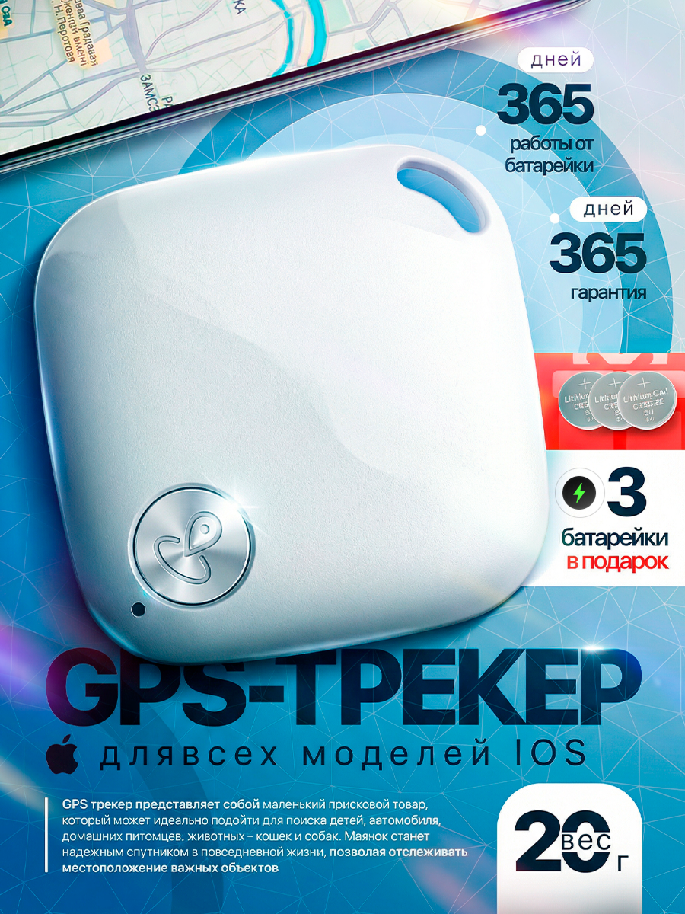
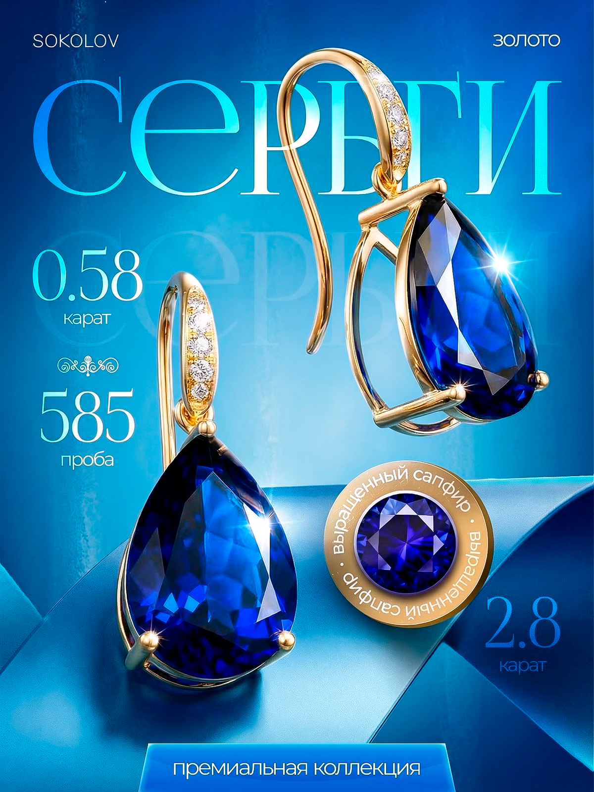

Помогаю продавцам выделиться среди конкурентов: создаю продающие визуалы, которые привлекают внимание и повышают конверсию. В работе учитываю особенности площадок (Ozon, Wildberries, Яндекс Маркет и др.), подбираю гармоничные цветовые схемы, шрифты и композиции. Готов взять на себя оформление карточек — от макета до финальных файлов.

Качественный дизайн карточек на маркетплейсе — это прямой инструмент роста продаж. Профессионально оформленные карточки помогают выделиться среди конкурентов: привлекательный визуал удерживает внимание покупателя в момент поиска, а чёткая подача ключевых характеристик ускоряет принятие решения. Правильно подобранные изображения, инфографика и структурированный текст снижают количество отказов и возвратов, повышают CTR и конверсию. В итоге — больше заказов, лояльность аудитории и лучшая видимость в выдаче маркетплейса. Инвестиция в дизайн окупается за счёт роста прибыли и узнаваемости бренда.

Дизайн карточек для маркетплейса делает процесс покупки комфортным и понятным. Чёткая визуальная иерархия, понятные фотографии, инфографика с ключевыми характеристиками и лаконичный текст помогают покупателю быстро оценить товар. Вместо долгих поисков нужной информации он сразу видит, что ему нужно — и переходит к оформлению заказа. В результате снижается уровень стресса от выбора, повышается удовлетворённость клиента и вероятность повторных покупок. Грамотный дизайн превращает сложный процесс в простой и приятный, а это напрямую влияет на лояльность и репутацию продавца.